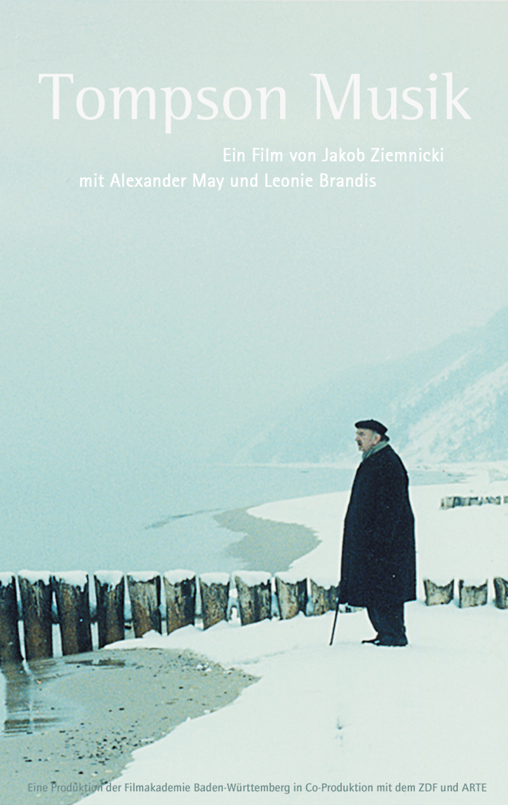
| 2026 | „Showtrial" | Serie | Serienadaption mit Marianne Wendt · Windlight Pictures |
| 2025 | „Tatort Hamburg – Romina" | TV-Reihe | Stoffentwicklung mit Thomas André Szabó · Wüste Film |
| 2025 | „In Bed with the Devil" | Kinofilm | Stoffentwicklung mit Marianne Wendt |
| 2024–25 | „Last Percent" | Mini-Serie | Stoffentwicklung mit Marianne Wendt & Christian Schiller |
| 2024–25 | „My Perfect Wrong Life" | Mini-Serie | Stoffentwicklung mit Krystof Wizisla |
| 2021–22 | „Ankommen" | Mini-Serie | Stoffentwicklung mit Jasmina Wesolowski · Studio Zentral |
| 2020–22 | „Baltic Noir" | Mini-Serie | Konzept und Entwicklung |
| 2018–19 | „Engel von Neukölln" | Kinofilm | Stoffentwicklung mit Elke Rössler |
| 2017–18 | „Tatort Berlin – Ausgeliefert" | TV-Reihe | Stoffentwicklung mit Marianne Wendt · Wiedemann & Berg · RBB |
| 2014–15 | „Späzle mit Wodka" | Comedy-Serie | Stoffentwicklung, Konzeption, Pilot-Drehbuch mit Dagmar Rehbinder · UFA Serial Drama · SWR |
| 2012–14 | „Killing Berlin" | Mini-Serie | Stoffentwicklung, Konzeption & Drehbuch mit Katrin Milhahn & Antonia Rothe-Liermann · UFA Fiction · RTL |
| 2012–13 | „Neger auf Skiern" | Kinofilm | Drehbuch mit Katrin Milhahn · FFA · Frisbee Films GmbH |
| 2009–11 | „Viva Polonia" | Kinofilm | Adaption des Bestsellers von Steffen Möller mit Daniel Schwarz · UFA Cinema |
| 2005 | „Hand ins Feuer" | Kinofilm | Stoffentwicklung mit Bernd Lange · Polyphon Film & Fernseh · ZDF |
| 2004–05 | „Mairitter" | Kinofilm | Drehbuch mit Marc O. Seng · Teamworx · SWR / WDR |


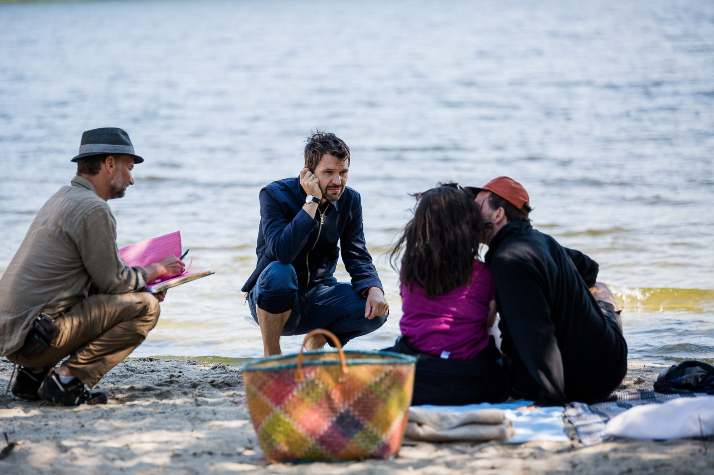


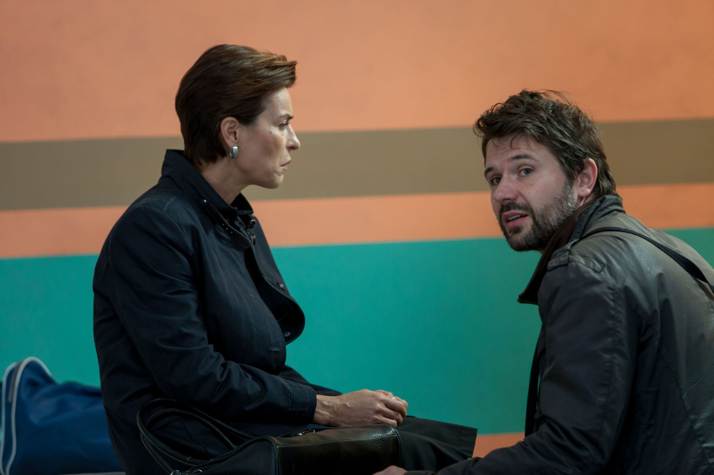
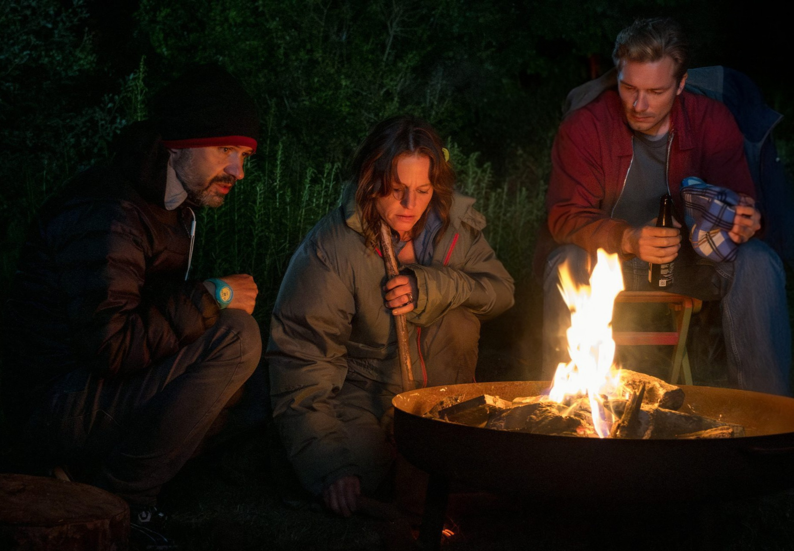

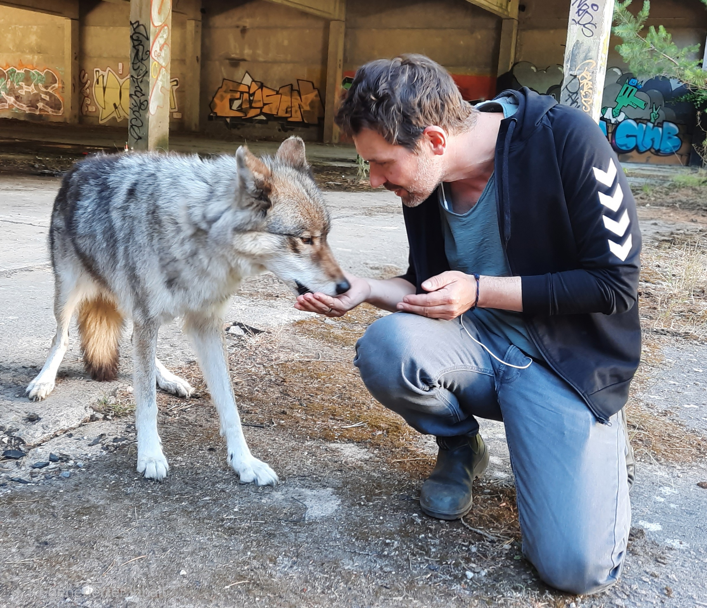

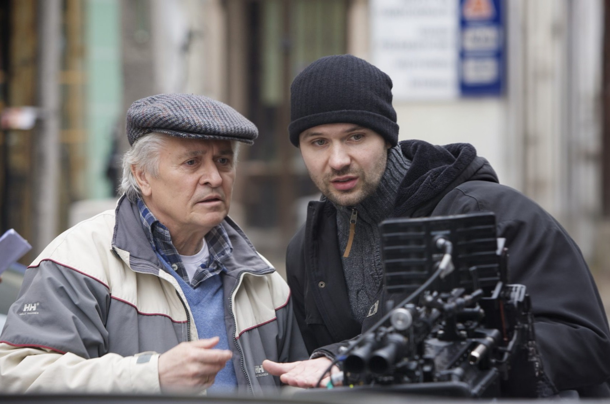
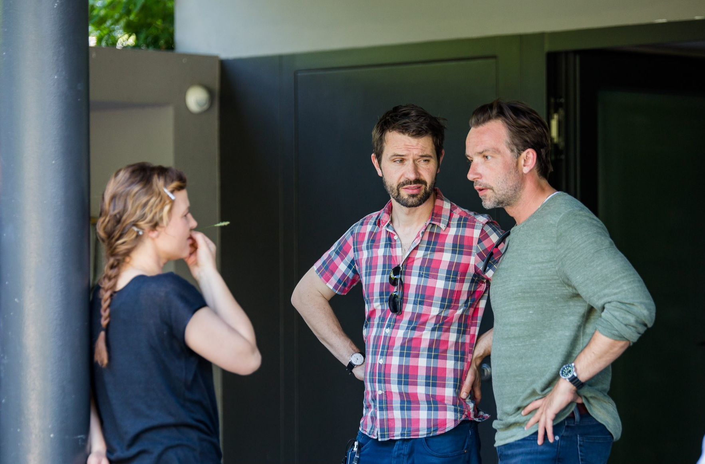


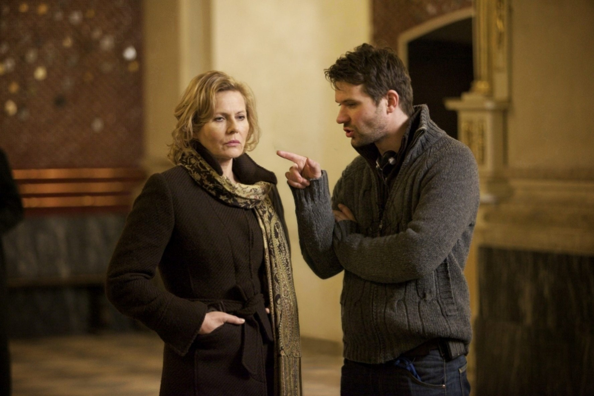


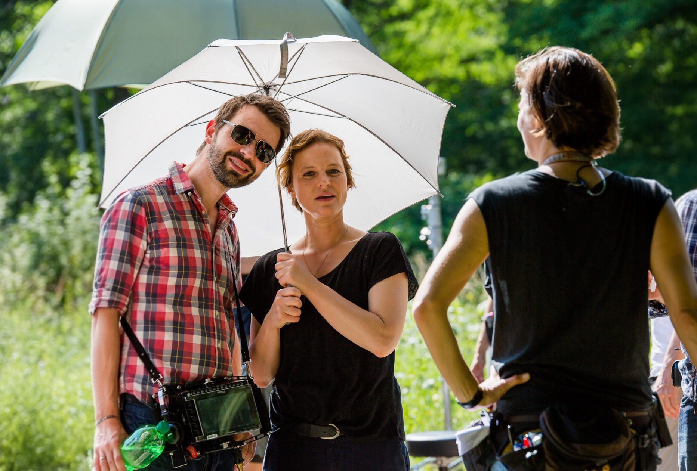


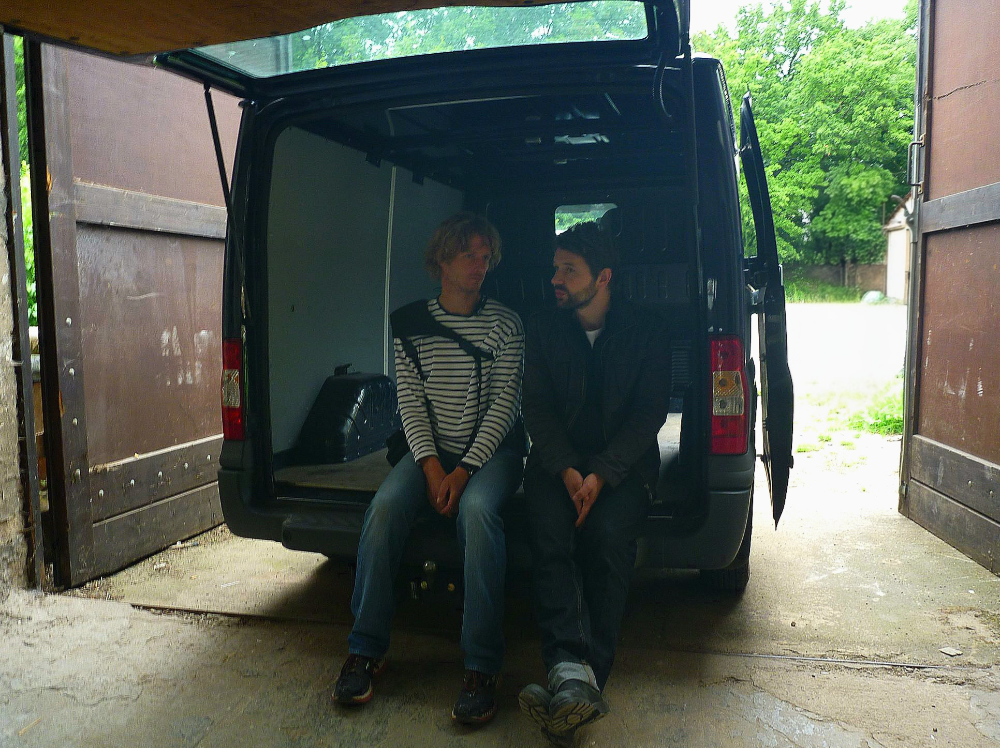


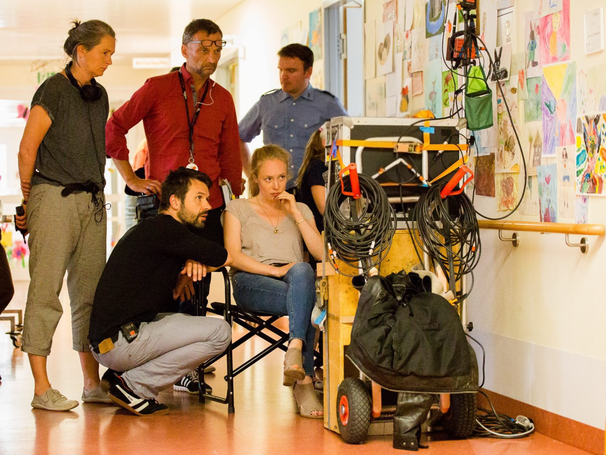

Jakob Ziemnicki wurde 1975 in Gdańsk, Polen geboren und floh 1980 mit seiner Familie kurz vor der Verhängung des Kriegsrechts nach Deutschland. Schon als Schüler in Köln drehte er erste Kurzfilme mit Freunden.
Nach dem Abitur am Deutsch-Französischen Gymnasium Kreuzgasse studierte er Philosophie und Germanistik an der Universität Köln. Parallel dazu machte er Praktika bei Produktionsfirmen, arbeitete im Jugendfilm Club Köln und im Kölner Filmhaus und sammelte erste Erfahrungen als Regieassistent und Cutter. Gemeinsam mit Philipp Stennert realisierte er den Low-Budget-Spielfilm Dark (1998), der auf dem Fantasy Filmfest, dem Brussels International Horror Festival und zahlreichen weiteren Festivals lief.
Von 1998 bis 2004 studierte er Regie und Drehbuch an der Filmakademie Baden-Württemberg in Ludwigsburg. Sein Diplomfilm Tompson Musik (2004) nach einer Kurzgeschichte von Judith Hermann gewann zahlreiche internationale Preise – darunter den Robert-Bosch-Förderpreis – und wurde für den Prix Europa und den First Steps Award nominiert. Als Teil der German-Films-Kurzfilmrolle lief er in Cannes, Venedig und Locarno.
Der Episodenfilm 1. Mai – Helden bei der Arbeit (2008) feierte seine Premiere auf der Berlinale und die Tragikomödie Polnische Ostern (2011) beim Max Ophüls Filmfestival in Saarbrücken.
2014/15 entwickelte er für den RBB das Konzept der neuen deutsch-polnischen Polizeiruf-110-Reihe in Frankfurt/ Świecko. Er schrieb und inszenierte Grenzgänger (2015) und Das Beste für mein Kind (2017), die zeitgleich in Deutschland und Polen ausgestrahlt wurden und großes Medienecho hatten.
Für ARD/Degeto inszenierte er den Neo-Noir-Thriller Todesengel (2019) nach Craig Russells Bestseller Walküre, gefolgt vom Öko-Thriller Wolfsjagd (2023).
Deutsch und Polnisch sind seine Muttersprachen, Englisch und Französisch spricht er fließend. Er lebt mit seiner Familie in Berlin.
| 2023 | Wolfsjagd | Regie & Buch | TV-Film | ARD / Degeto |
| 2019 | Todesengel | Regie & Buch | TV-Film | ARD / Degeto |
| 2017 | Polizeiruf 110 – Das Beste für mein Kind | Regie & Buch | TV-Film | RBB / ARD / TVP1 |
| 2015 | Polizeiruf 110 – Grenzgänger | Regie & Buch | TV-Film | RBB / ARD / TVP1 |
| 2011 | Polnische Ostern | Regie & Buch | Kinofilm | ZDF / Das kleine Fernsehspiel |
| 2008 | 1. Mai – Helden bei der Arbeit | Regie & Buch | Kinofilm | HR / arte · Berlinale |
| 2004 | Tompson Musik | Regie | Diplomfilm | ZDF / arte · Filmakademie BW |
| 1998 | Dark | Regie & Buch | Kinofilm | Fantasy Filmfest · Brussels Int. Horror Festival u.a. |

In einem kleinen Zimmer in Köln-Chorweiler stand ein Plattenspieler. Ich war sechs, wir waren gerade aus Polen geflohen, und auf dem Teller drehten sich Winnetou und die Schatzinsel. Später kam das Dschungelbuch dazu. Draußen grauer Waschbeton. Drinnen öffneten sich Türen in Welten, die ich noch nie gesehen hatte: Landschaften und Figuren. In meiner Phantasie, lange bevor ich die Bilder dazu kannte.
Einen Fernseher bekamen wir erst zwei Jahre später. Und das änderte alles. Im ZDF lief „Der phantastische Film", viel zu spät für einen Grundschüler. Ich nervte meine Eltern so lange, bis sie es erlaubten. Ich musste „vorschlafen", um dann mit ihnen Planet der Affen, Tanz der Vampire, Die Vögel oder Der Mieter zu sehen. Bis heute sehe ich die Gesichter. Charlton Heston, als er begreift, dass der Planet der Affen die Erde ist. Tippi Hedren, deren Blick erstarrt, als die Vögel kommen. Ein Bruchteil einer Sekunde, in dem man das Innere sieht. Das interessiert mich noch heute am meisten.
Mit achtzehn drehte ich mit Freunden meinen ersten Langfilm: DARK. Ohne Budget, ohne Filmschule. Wir machten es einfach. Der Film funktionierte, weil wir etwas erzählt hatten, das wahrhaftig war. Figuren, die damit rangen, erwachsen zu werden, und Entscheidungen trafen, die Konsequenzen hatten. Genauso wie wir.
Gute Filme entstehen aus dem Drang, etwas erzählen zu wollen. Doch dafür braucht es Haltung. Und die lernte ich von Tom Toelle. An der Filmakademie in Ludwigsburg machte er mir klar, dass Regie Verantwortung bedeutet. Sein Credo: „Du kannst nur inszenieren, was du wirklich siehst." Seitdem frage ich mich immer zuerst: Warum erzähle ich das? Was bin ich bereit, dafür zu riskieren? Whydunnit statt Whodunnit. Was treibt eine Figur an?
Die wichtigste Aufgabe eines Regisseurs ist für mich die Arbeit mit den Schauspieler*innen. Sie sind das Gesicht des Films. Kieślowskis Ausspruch „Stay close to the actors" wurde zu meinem heimlichen Regiecredo: die besten Momente entstehen, wenn man aufhört, sie zu kontrollieren. Deshalb schaffe ich bei Proben und am Set immer einen Safe-Space, einen Raum, in dem Risikobereitschaft und Verletzlichkeit möglich sind. Ohne Angst, sich zu blamieren.
Film ist Teamarbeit. Das weiß ich als alter „Fußballer". Die Verantwortung für den Gesamtton und für die Präzision der Erzählung liegt bei der Regie, aber ohne das Team gibt es keinen Film.
Lange Zeit wollte ich mich mit meiner polnischen Herkunft nicht auseinandersetzen. Trotzdem zog es mich seit Tompson Musik immer wieder zurück, nach Polen. Polnische Ostern. Die Polizeiruf-Folgen des RBB. Stück für Stück habe ich so meine zweite Identität wiederentdeckt, Anschluss an die polnische Kunst und Kultur gefunden, mit großartigen Filmschaffenden aus Polen gearbeitet, die Klassiker des polnischen Kinos nachgeschaut. Und eines Abends im Nationaltheater in Warschau habe ich es verstanden: diese osteuropäische Melancholie, dieser polnische Fatalismus, dieses Weder-ganz-deutsch-noch-ganz-polnisch-Sein. Das alles ist ein Teil von mir. Es gibt kein Schwarz-Weiß. Nur viele Grautöne. Genau deshalb ist Beliebigkeit in Filmen für mich keine Option.
Ein Film ist nur dann gut, wenn er im Publikum weiterlebt. Alles andere ist lauwarme Soße, wie David Lynch das einmal so perfekt gesagt hat.
– Jakob Ziemnicki im Frühjahr 2026
Jakob Ziemnicki
Fidicinstr. 21
10965 Berlin
Deutschland
E-Mail: info@ziemnicki.de
Jakob Ziemnicki
Fidicinstr. 21, 10965 Berlin
Die durch den Seitenbetreiber erstellten Inhalte und Werke auf diesen Seiten unterliegen dem deutschen Urheberrecht. Die Vervielfältigung, Bearbeitung, Verbreitung und jede Art der Verwertung außerhalb der Grenzen des Urheberrechtes bedürfen der schriftlichen Zustimmung des jeweiligen Autors bzw. Erstellers.
Portrait-Foto und Vita-Foto: © Jakob Ziemnicki
Filmstills Wolfsjagd (2023): Kamera Benjamin Dernbecher, Standfoto Conny Klein
Filmstills Todesengel (2019): Kamera Jakob Beurle, Standfoto Georges Pauly
Filmstills Polizeiruf 110 – Das Beste für mein Kind (2017): Kamera Gunnar Fuß, Standfoto Andrea Hansen
Filmstills Polizeiruf 110 – Grenzgänger (2015): Kamera Matthias Fleischer, Standfoto Conny Klein
Filmstills Polnische Ostern (2011): Kamera Benjamin Dernbecher, Standfoto Georges Pauly
Filmstills 1. Mai – Helden bei der Arbeit (2008): Kamera Kolja Raschke u.a., Standfoto Jochen Roeder
Filmstills Tompson Musik (2004): Kamera Sten Mende, Standfoto Sibylle Baier
Jakob Ziemnicki
Fidicinstr. 21
10965 Berlin
E-Mail: info@ziemnicki.de
Diese Website wird über GitHub Pages gehostet, einen Dienst der GitHub, Inc., 88 Colin P Kelly Jr St, San Francisco, CA 94107, USA. Beim Aufruf der Seiten werden automatisch sogenannte Server-Logfiles gespeichert (z. B. IP-Adresse, Datum und Uhrzeit, Browsertyp). Diese Daten sind für den Betrieb der Website erforderlich und werden nach kurzer Zeit automatisch gelöscht. Eine Zusammenführung mit anderen Datenquellen erfolgt nicht.
Rechtsgrundlage: Art. 6 Abs. 1 lit. f DSGVO (berechtigtes Interesse an einem sicheren und funktionsfähigen Betrieb der Website).
Diese Website setzt ausschließlich technisch notwendige Cookies, die für die Funktion und Sicherheit der Seite erforderlich sind. Es werden keine Tracking- oder Marketing-Cookies verwendet.
Sie haben das Recht auf Auskunft, Berichtigung, Löschung und Einschränkung der Verarbeitung Ihrer personenbezogenen Daten sowie auf Datenübertragbarkeit. Außerdem haben Sie ein Beschwerderecht bei einer Aufsichtsbehörde.
Diese Datenschutzerklärung ist aktuell gültig (Stand: Mai 2026).